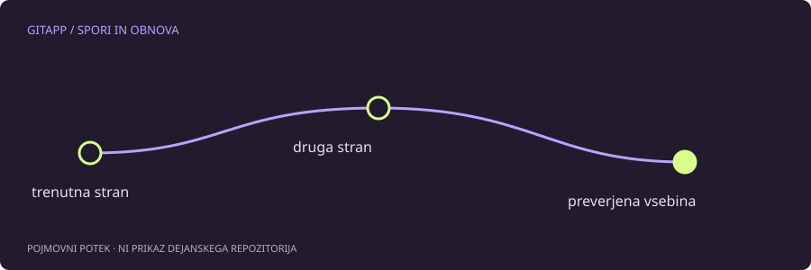

Git se ustavi pri dvoumnosti
Spor nastane, ko Git ne more sam dovolj zanesljivo sestaviti skupnega rezultata. To ni nujno znak slabe kode. Dve smiselni spremembi istega dela lahko zahtevata človeško odločitev, kaj naj datoteka zdaj pomeni.
Pri običajnem prikazu spora so deli ločeni z označevalci <<<<<<<, ======= in >>>>>>>. Oznake povedo, od kod prihaja posamezna stran, vendar pravilna rešitev ni vedno ena celotna stran. Včasih moraš napisati novo kombinacijo.
Preberi tudi okolico
Začni z git status, da ugotoviš, kateri postopek je v teku in katere datoteke so nerešene. Potem odpri datoteko in preberi širši kontekst. Če se spreminjata ime spremenljivke in njena uporaba na različnih mestih, izbira samo ene vidne vrstice morda ne zadostuje.
git status
git diffVsebina izpisa med sporom ima lahko posebno obliko. Ne obravnavaj je kot povsem običajno primerjavo dveh čistih različic. Dodatni slogi spora lahko prikažejo tudi skupnega prednika, kar pomočnik za preprosto vajo izrecno ločuje od podprtega formata.
Sestavi rezultat z razlogom
Iz končne datoteke odstrani označevalce in ohrani smiselno vsebino. V vaji GitApp se odločiš, ali želiš pozdraviti po imenu in hkrati dodati prijazen zaključek. Ne gre za tekmovanje v izbiri strani, temveč za razumevanje namena obeh sprememb.
Pri resnični kodi preveri sintakso, povezane datoteke in preizkuse. Dejstvo, da v datoteki ni več označevalcev, še ne pomeni, da program deluje. Pri podatkovnih ali konfiguracijskih datotekah preveri tudi pričakovano strukturo.
Priprava in zaključek
Ko je datoteka dejansko razrešena, jo pripraviš za ustrezni postopek. Pred zaključkom ponovno preberi git status in preveri pripravljene razlike. Zaključni ukaz je odvisen od tega, ali gre za združevanje, preurejanje ali razveljavljanje.
Ne uporabljaj izraza »moja stran« kot univerzalnega pravila. Med preurejanjem se pomen izrazov ours in theirs lahko zdi zamenjan glede na pričakovanje uporabnika. Vedno glej konkretno operacijo in vsebino.
Kadar se odločiš odnehati
Za združevanje obstaja git merge --abort, vendar prekinitev ne more vedno zanesljivo rekonstruirati vsega nepotrjenega dela, če si ga imel že pred začetkom. Zato je bolje pred združevanjem pripraviti čisto in zavarovano izhodišče. Prekinitev je načrtovan izhod iz določenega postopka, ne univerzalna časovna mašina.
Vir in obseg
Referenca: uradni priročnik za git-merge. Primeri so pripravljeni za učenje in niso opis posega v dejanski projekt. Preberi način preverjanja.